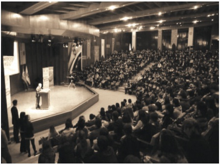

Faydalı Bilgiler
Konferanslarım – Jüri Üyeliklerim – Ödüllerim
Önerdiğim Web Siteleri
Deulcom’un İlk Kursiyerleri

Çukurova üniversitesinde konferans verirken...
Konferans Talepleriniz İçin: 0212 2921090
baltuntas@deulcom.com.tr
Boğaziçi Üniversitesi
İşletme ve Ekonomi Kulübü
GAIA 8. Uluslararası Öğrenci Kongresi
24 Mayıs 2005, İstanbul
Çukurova Üniversitesi
Sinerji Kulübü
Yönetim ve Kariyer Zirvesi
7 Mart 2011, Adana
Mersin Üniversitesi
İktisadi ve İdari Bilimler Topluluğu
14. Kariyer Günleri
3 Mayıs 2011, Mersin
Yıldız Teknik Üniversitesi
İşletme Kulübü
Yenilikçilik ve Liderlik Günleri
8 Aralık 2010, İstanbul
Celal Bayar Üniversitesi
Mühendislik Fakültesi
Girişimcilik ve İnovasyon
9 Haziran 2010, Manisa
İzmir Ekonomi Üniversitesi
Mütevelli Heyeti ve Rektörlük
Kariyer Günleri
10 Nisan 2008, İzmir
Boğaziçi Üniversitesi
COMPEC Bilişim Kulübü
Girişimcilik Konferansı
21 Nisan 2011, İstanbul
Doğu Akdeniz Üniversitesi
IEEE Kulübü
Girişimcilik Günleri
12 Mart 2010, Magosa
Mersin Üniversitesi
Sosyal ve Kültürel Etkinlikler Topluluğu
Ekonomi ve İK Zirvesi
15 Nisan 2011, Mersin
İzmir Yüksek Teknoloji Enstitüsü
IYTE
Girişim Günleri
12 Nisan 2010, İzmir
Marmara Üniversitesi
İktisadi ve İdari Bilimler Fakültesi
Eğitim Seminerleri 2000
15 Nisan 2000, İstanbul
İTÜ
İstanbul Teknik Üniversitesi
İnsan Kaynakları Zirvesi
22 Şubat 2011, İstanbul
Marmara Üniversitesi
Maliye Kulübü
Bir Kariyer Bir Lider 2011
10 Mayıs 2011, İstanbul
Doğu Akdeniz Üniversitesi
İşletme ve Ekonomi Fakültesi
Girişimcilik Günü
17 Mayıs 2011, Magosa
Marmara Üniversitesi
Kariyer ve Gelişim Kulübü
Girişimcilik ve Pazarlama Galeyanı
8 Mart 2011, İstanbul
Bahçeşehir Ünversitesi
Genç Girişimciler Kulübü
Dragons’ Den Türkiye Söyleşisi
23 Mart 2011, İstanbul
Onsekiz Mart Üniversitesi
Biga İktisadi ve İdari Bilimler Fakültesi
Yönetim Bilimleri Zirvesi
2 Nisan 2001, Çanakkale
Marmara Üniversitesi
Sosyal Bilimler Meslek Yüksekokulu
Turizm Günleri
19 Aralık 1998, İstanbul
Boğaziçi Üniversitesi
İşletme ve Ekonomi Kulübü
Turizm Sektöründeki Mesleki Gelişmeler
25 Şubat 1998, İstanbul
Sütçü İmam Üniversitesi
Genç Girişimciler Topluluğu
1. Ulusal Genç Girişimciler Zirvesi
20 Mayıs 2011, Kahramanmaraş
Ankara Üniversitesi
Ziraat Fakültesi
7. Geleneksel Sektörle Buluşma ve Kariyer Günleri
18 Nisan 2011, Ankara
Gazi Üniversitesi
Kariyer Günleri
29 Nisan 2011, Ankara
Gebze İleri teknoloji Enstitüsü
Fen ve Mühendislik Topluluğu
Sıfırdan Nasıl Patron Olunur?
24 Kasım 2010, Gebze
Ondokuz Mayıs Üniversitesi
KOSGEB
Girişimcilik Toplantısı
17 Mart 2011, Samsun